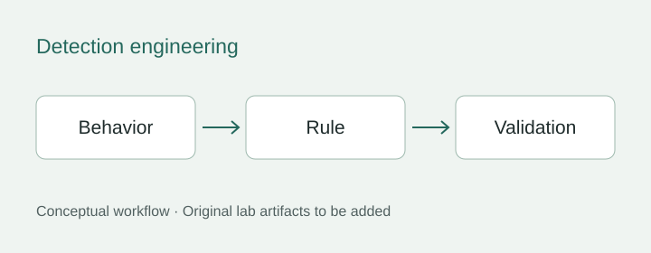
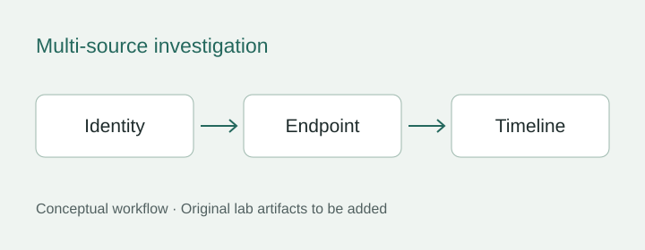
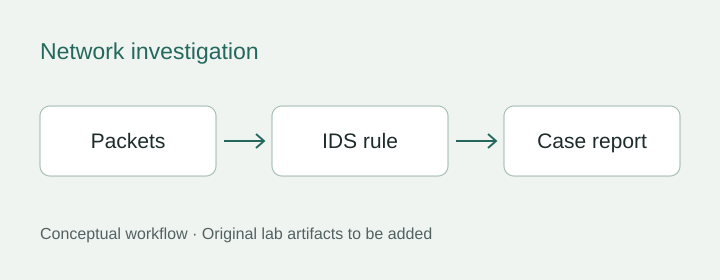

Detection engineering
SPL and Sigma rules, simulated attack scenarios, ATT&CK mapping and lab tuning.
Read case studyCybersecurity Analyst
B.S. Information Systems & Technology (Cybersecurity)California State University, San Bernardino
CompTIA Security+ · CySA+
I investigate security events and build tools for detection, research, and adaptive learning.
Detection logic, correlated events and packet evidence—with the reasoning behind each decision.

SPL and Sigma rules, simulated attack scenarios, ATT&CK mapping and lab tuning.
Read case study
Authentication, endpoint and network context brought together in an investigation timeline.
Read case study
Kali Linux simulations, Wireshark packet review and Snort detection tuning.
Read case studySplunk boundary debugging · Windows process triage · Generated packet investigation · Local web hardening
Explore every case and planned project ↗I have a B.S. in Information Systems & Technology (Cybersecurity) from California State University, San Bernardino. My lab work focuses on detection, investigation, and clear technical documentation.
My professional background includes physical-security monitoring, incident reporting, and escalation as a Security Officer with Allied Universal, 2019–present.
View my résumé ↗Two independent projects that connect my security work to data engineering and evidence-aware software.
Preserve data versions, build reproducible experiments and keep research decisions traceable.
Follow a research input ↗Make source support, contradictions and uncertainty visible behind a research answer.
Inspect a claim’s evidence ↗Academic and professional recognition, with details and images to follow.
View recognition ↗I’m interested in SOC and Security Analyst opportunities.
frailtycraven@gmail.com ↗